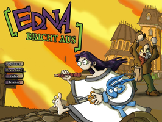
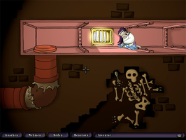
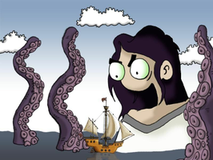

Edna bricht aus
Dieser Artikel wurde für die folgenden Ubuntu-Versionen getestet:
Ubuntu 16.04 Xenial Xerus
Ubuntu 14.04 Trusty Tahr
Zum Verständnis dieses Artikels sind folgende Seiten hilfreich:
Edna bricht aus  (engl. Titel: Edna & Harvey: The Breakout) ist ein 2008 von Xider herausgegebenes Point-and-Click-Grafik-Adventure, das sich von der Bedienung und Inhalt an klassischen Adventures orientiert. Das Spiel erhielt insbesondere aufgrund der originellen Rätsel und der skurrilen Handlung positive Kritiken.
(engl. Titel: Edna & Harvey: The Breakout) ist ein 2008 von Xider herausgegebenes Point-and-Click-Grafik-Adventure, das sich von der Bedienung und Inhalt an klassischen Adventures orientiert. Das Spiel erhielt insbesondere aufgrund der originellen Rätsel und der skurrilen Handlung positive Kritiken.
|  |  |
| Hauptmenü | Spielszene |
Installation¶
Klassische Edition¶
Edna bricht aus lässt sich ohne Probleme mittels Wine installieren und spielen. Da das Spiel jedoch vollständig auf Java basiert, ist es darüber hinaus auch möglich das Spiel mit Hilfe eines inoffiziellen Java-Installers zu installieren und anschließend nativ zu spielen.
Java-Installer¶
Bedingung für diese Variante ist eine bereits installierte Java Laufzeitumgebung. Weiterhin wird der inoffizielle Java-Installer, welcher von ubuntuusers.de  , holarse-linuxgaming.de oder googlepages.com heruntergeladen werden kann, benötigt.
, holarse-linuxgaming.de oder googlepages.com heruntergeladen werden kann, benötigt.
Um die Installation zu beginnen, muss der Java-Installer per  Doppelklick oder per Terminal [1] durch
Doppelklick oder per Terminal [1] durch
java -jar ednaunpack.jar
gestartet werden. Das obere Textfeld verlangt die Eingabe des Pfades zur DVD, welcher gegebenenfalls geändert werden muss (z.B. /media/Ednabrichtaus). In die untere Zeile wird der Installationspfad (z.B. ~/Spiele/Edna) eingetragen. Die anschließende Installation kann durchaus längere Zeit dauern und belegt circa 7GB Festplattenplatz.
Wine¶
Bedingung für diese Variante ist ein bereits installiertes Wine [2]. Informationen über die Kompatibilität mit den jeweiligen Wine-Versionen findet man in der Wine Application Database  . Die Installation des Spiels sollte jedoch ohne Probleme ablaufen [2].
. Die Installation des Spiels sollte jedoch ohne Probleme ablaufen [2].
Hinweis:
Eine unter Windows installierte Version kann einfach auf eine Linuxpartition kopiert werden und lässt sich von dort aus problemlos starten. Bei dieser Vorgehensweise werden jedoch keine Registry-Einträge angelegt, was den Start über Wine nicht empfehlenswert macht. Diese Art der Installation kann nur mittels java direkt gestartet werden.
|  |
| Intro |
Sammler-Edition¶
Diese Edition verwendet, im Gegensatz zur klassischen Version, die Laufzeitumgebung Oracle Java 7.
CD¶
Die Installations CD der "Edna bricht aus - Sammler Edition" wurde mit Inno Setup erstellt. Daher kommt hier innoextract zum Einsatz um die benötigten Daten zu extrahieren [3]:
innoextract setup.exe
GOG.com¶
Die Edna Sammler-Edition nach dem Erwerb aus der Bibliothek herunterladen. Das Spiel entpacken [3]:
innoextract setup_edna_and_harvey_the_breakout_2.5.exe
Im neu erstellten Ordner app befinden sich nun das Spiel The Breakout (Edna bricht aus). Diesen in Edna umbenennen und nach ~/Spiele verschieben, Im nächsten Schritt die aktuelle lwjgl-VERSIONSNUMMER.zip herunterladen und entpacken [4]. In den Ordner lwjgl-2.8.5/jar/ wechseln und die Datei lwjgl.jar in das Installationsverzeichnisses ~/Spiele/Edna/lib kopieren . Die Ursprungsdatei ggf. vorher umbenennen (z.B. nach lwjgl.jar.bak). Anschließend die Rechte für Dateien und Ordner ändern und alle Dateien aus dem Ordner /lwjgl-2.8.5/native/linux ebenfalls in das bereits erwähnte Verzeichnis lib kopieren.
Eine weitere Anleitung für Ubuntu 14.04 ist im Forum zu finden.
Patch¶
Klassische Edition¶
Um den Patch einzuspielen lädt man diesen von daedalicsupport.com , holarse-linuxgaming.de oder 4players.de herunter und entpackt [7] die eba_patch_1_1.exe im Homeverzeichnis. Anschließend wechselt man in den neuen Ordner ~/eba_patch_1_1/patch und ruft mit Wine [2] die Datei EdnaPatchTool.exe auf, nachdem man die Ausführrechte [5] gesetzt hat.
wine EdnaPatchTool.exe -patchDir ~/eba_patch_1_1/patch/ -gameDir ~/Spiele/Edna
Nach erfolgreicher Durchführung kann das Spiel gestartet werden.
Spielstart¶
Wurde das Spiel mit Wine [2] installiert, ist es wie gewohnt auch möglich, das Spiel mit Wine zu starten. Bei allen drei Installationsvarianten ist es darüber hinaus möglich, das Spiel nativ zu spielen. Man wechselt dazu im Terminal [1] lediglich in das Installationsverzeichnis und startet das Spiel mittels des folgenden Befehls:
java -Xms256M -Xmx512M -jar EbaMain.exe w #Klassische Edition / Fenstermodus java -jar -Xms256M -Xmx512M -Djava.library.path="lib/" -XX:-UseSplitVerifier Edna.jar #Sammler-Edition
Weitere Startparameter können übergeben werden:
| Startparameter | |
| Parameter | Funktion |
-Xms256M | mindestens 256 MiB Speicher |
-Xmx512M | maximal 512 MiB Speicher wird verwendet. |
w | Fenstermodus - Auflösung max. 800x600. |
-Dsun.java2d.opengl=true | Wenn ein OpenGL-Treiber für die Grafikkarte installiert ist, kann man die Grafikqualität und -performance durch diese Option verbessert werden. |
-Djava.library.path="lib/" | Bibliotheken aus lib werden verwendet. |
-XX:-UseSplitVerifier | Use the new type checker with StackMapTable attributes. |
Auf Wunsch einen Menüeintrag [7] vornehmen und die gewünschten Parameter übernehmen. Alternativ kann im Installationsverzeichnis ein kleines Skript verwendet werden. Hierzu in einem Editor [8] die Datei Edna.sh erstellen.
In die Datei wird dieser Inhalt kopiert:
1 2 3 4 | #!/bin/bash cd ~/Spiele/Edna #gegebenenfalls anpassen java -Xms256M -Xmx512M -jar EbaMain.exe w #Klassik Edition java -jar -Xms256M -Xmx512M -Djava.library.path="lib/" -XX:-UseSplitVerifier Edna.jar #Sammler-Edition |
Abschließend noch die Ausführrechte [5] setzen.
Einstellungen¶
Über Esc erreicht man das Spielmenü. Hier können Einstellungen zur Soundwiedergabe sowie zur Textgeschwindigkeit vorgenommen werden. Außerdem findet man hier die Option den Spielstand zu laden bzw. zu speichern.
Weitere Einstellungen können im Installationsverzeichnis über die Datei ednaPreferen.ces vorgenommen [8] werden.
ednaPreferen.ces¶
| ednaPreferen.ces | |
| Parameter | Funktion |
<entry key="language" value="de"/> | Sprache de und en . |
<entry key="fullscreen" value="true"/> | Vollbild |
<entry key="fullscreen" value="false"/> | Fenstermodus |
Problembehebung¶
Einfrieren¶
Sollte das Spiel "einfrieren", kann die Java-Version von Oracle verwendet werden (siehe Oracle_Java).
Soundausgabe¶
In der Version 6 von OpenJDK kann es zu Fehlern mit der Soundausgabe kommen. Als Notlösung empfiehlt es sich hier, die Hintergrundmusik zu deaktivieren. In den Optionen deaktiviert man hierfür "Musik an/aus". Falls auch OpenJDK 7 nicht weiterhilft, sollte man auf die Java-Version von Oracle umsteigen, bei der es dieses Problem nicht gibt.
Textgeschwindigkeit¶
Zu Spielbeginn ist die Textgeschwindigkeit eventuell zu hoch eingestellt. Abhilfe schafft hier eine Veränderung der Einstellungen. Mittels Esc gelangt man ins Menü. Hier deaktiviert man "Sound an/aus". Nachdem dies geschehen ist erscheint ein Regler. Mit diesem kann man die Geschwindigkeit variieren. Um die Geschwindigkeit zu verringern lediglich den Regler über die Markierung hinaus nach links ziehen.
Demo¶
Es existiert eine Demo von Edna bricht aus, welche unter anderem von 4players.de heruntergeladen und mit Hilfe von Wine installiert werden kann. Der Start der Demo kann - genau wie bei der Vollversion - wahlweise per Wine oder nativ geschehen.
Tastenkürzel¶
| Tastenkürzel | |
| Taste(n) | Funktion |
| Esc | Menü aufrufen - Spieleinstellungen können vorgenommen sowie Spielstände geladen bzw. gespeichert werden. |
| Alle verfügbaren Aktion in einem Raum werden angezeigt. | |

Infobox¶
| Edna bricht aus | |
| Genre: | Adventure |
| Sprache: | |
| Veröffentlichung: | 2008 |
| Publisher: | Daedalic Entertainment |
| Systemvoraussetzungen: | 1 GHz / 512 MB RAM / 7 GB freier Festplattenspeicher / 64 MB Grafikkartenspeicher |
| Medien: | DVD (1) / Download |
| Strichcode / EAN / GTIN: | 9783828761636 / 9783828761605 |
| Läuft mit: | Wine, nativ |
- Erstellt mit Inyoka
-
 2004 – 2017 ubuntuusers.de • Einige Rechte vorbehalten
2004 – 2017 ubuntuusers.de • Einige Rechte vorbehalten
Lizenz • Kontakt • Datenschutz • Impressum • Serverstatus -
Serverhousing gespendet von